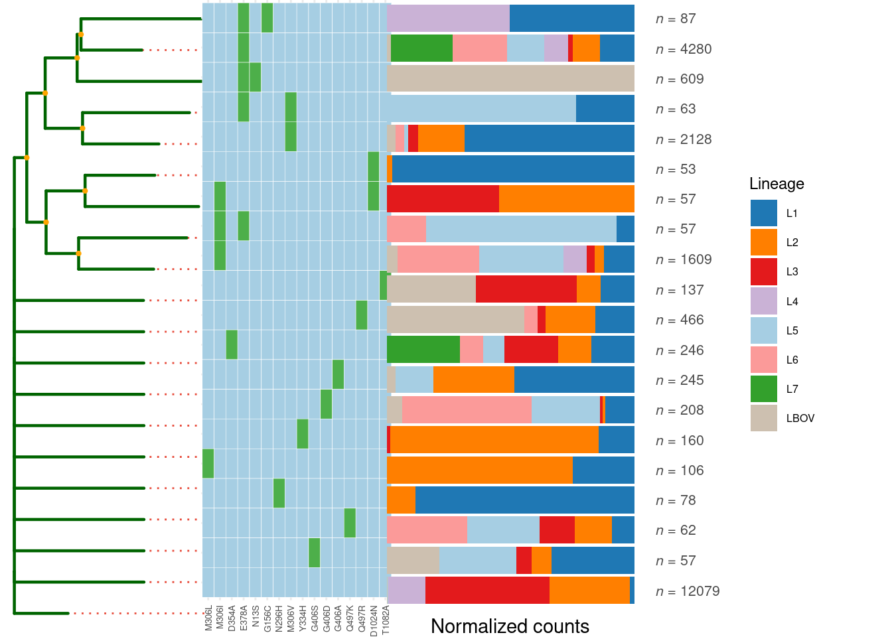

Chapter 5 katG Mutation Analysis (Isoniazid Resistance)
## filter genes## remain 51181 sample and 1271 snps# Filter strains with R463L variant (a common INH resistance mutation)
katG_R463L_index <- katG_mut %>%
filter(AA_effect_short == "R463L") %>%
pull(INDEX)
# filter_sample function will keep samples with katG_R463L mutation.
katG_R463L <- Mtb_mut$filter_sample(mutation_index = katG_R463L_index)## remain 24610 sample and 1293186 snps# To examine how katG mutations are distributed across different bacterial
# lineages, we can perform lineage-specific frequency calculations
# statistically:
Mtb_mut$estimate_imp("katG",gene_type = "GENE",metadata_col = "Lineage") %>%
filter(INDEX %in% katG_R463L_index)## filter genes## remain 51181 sample and 1271 snps## calculate mutation frequency## CHROM POS TYPE FTYPE STRAND NT_POS AA_POS
## C2154731Asnp NC_018143 2154731 snp CDS - 1388/2223 463/740
## CGG2154731AGTcomplex NC_018143 2154731 complex CDS - 1388/2223 462/740
## CG2154731AAcomplex NC_018143 2154731 complex CDS - 1388/2223 463/740
## CGG2154731AGAcomplex NC_018143 2154731 complex CDS - 1388/2223 462/740
## EFFECT
## C2154731Asnp missense_variant c.1388G>T p.Arg463Leu
## CGG2154731AGTcomplex missense_variant c.1386_1388delCCGinsACT p.Arg463Leu
## CG2154731AAcomplex missense_variant c.1387_1388delCGinsTT p.Arg463Leu
## CGG2154731AGAcomplex missense_variant c.1386_1388delCCGinsTCT p.Arg463Leu
## LOCUS_TAG_NEW GENE PRODUCT AA_effect_short
## C2154731Asnp RVBD_RS10020 katG catalase/peroxidase HPI R463L
## CGG2154731AGTcomplex RVBD_RS10020 katG catalase/peroxidase HPI R463L
## CG2154731AAcomplex RVBD_RS10020 katG catalase/peroxidase HPI R463L
## CGG2154731AGAcomplex RVBD_RS10020 katG catalase/peroxidase HPI R463L
## LOCUS_TAG INDEX percents_L2 percents_L4
## C2154731Asnp Rv1908c C2154731Asnp 0.98083 0.0021
## CGG2154731AGTcomplex Rv1908c CGG2154731AGTcomplex 0.00007 0.0000
## CG2154731AAcomplex Rv1908c CG2154731AAcomplex 0.00007 0.0000
## CGG2154731AGAcomplex Rv1908c CGG2154731AGAcomplex 0.00007 0.0000
## percents_L1 percents_L3 percents_L5 percents_L6
## C2154731Asnp 0.98321 0.9801 0.99448 0.98795
## CGG2154731AGTcomplex 0.00000 0.0000 0.00000 0.00000
## CG2154731AAcomplex 0.00000 0.0000 0.00000 0.00000
## CGG2154731AGAcomplex 0.00000 0.0000 0.00000 0.00000
## percents_LBOV percents_L7
## C2154731Asnp 0.995 0.98113
## CGG2154731AGTcomplex 0.000 0.00000
## CG2154731AAcomplex 0.000 0.00000
## CGG2154731AGAcomplex 0.000 0.00000# Analysis of Drug Resistance Mutation Co-occurrence Patterns
# Comparative Analysis of embB Mutations in katG R463L Strains vs. WT Strains
embB_compare <- Mtb_mut$estimate_imp("embB",gene_type = "GENE",metadata_col = katG_R463L_index[1])## filter genes## remain 51181 sample and 1882 snps## calculate mutation frequency# Display significant non-synonymous embB mutations
embB_compare %>%
arrange(FDR) %>%
filter(!str_detect(EFFECT, "synonymous_variant")) %>%
head()## CHROM POS TYPE FTYPE STRAND NT_POS AA_POS
## A4247824Csnp NC_018143 4247824 snp CDS + 1133/3297 378/1098
## A4246729Gsnp NC_018143 4246729 snp CDS + 38/3297 13/1098
## A4247607Gsnp NC_018143 4247607 snp CDS + 916/3297 306/1098
## T4247580Gsnp NC_018143 4247580 snp CDS + 889/3297 297/1098
## A4249935Gsnp NC_018143 4249935 snp CDS + 3244/3297 1082/1098
## T4247691Csnp NC_018143 4247691 snp CDS + 1000/3297 334/1098
## EFFECT LOCUS_TAG_NEW GENE
## A4247824Csnp missense_variant c.1133A>C p.Glu378Ala RVBD_RS20020 embB
## A4246729Gsnp missense_variant c.38A>G p.Asn13Ser RVBD_RS20020 embB
## A4247607Gsnp missense_variant c.916A>G p.Met306Val RVBD_RS20020 embB
## T4247580Gsnp missense_variant c.889T>G p.Ser297Ala RVBD_RS20020 embB
## A4249935Gsnp missense_variant c.3244A>G p.Thr1082Ala RVBD_RS20020 embB
## T4247691Csnp missense_variant c.1000T>C p.Tyr334His RVBD_RS20020 embB
## PRODUCT AA_effect_short LOCUS_TAG INDEX
## A4247824Csnp arabinosyltransferase EmbB E378A Rv3795 A4247824Csnp
## A4246729Gsnp arabinosyltransferase EmbB N13S Rv3795 A4246729Gsnp
## A4247607Gsnp arabinosyltransferase EmbB M306V Rv3795 A4247607Gsnp
## T4247580Gsnp arabinosyltransferase EmbB S297A Rv3795 T4247580Gsnp
## A4249935Gsnp arabinosyltransferase EmbB T1082A Rv3795 A4249935Gsnp
## T4247691Csnp arabinosyltransferase EmbB Y334H Rv3795 T4247691Csnp
## count_total count_1 count_0 n1 n0 P_value
## A4247824Csnp 5807 5753 54 24610 26571 0.000000e+00
## A4246729Gsnp 645 639 6 24610 26571 5.938948e-150
## A4247607Gsnp 3530 2328 1202 24610 26571 1.993314e-107
## T4247580Gsnp 377 6 371 24610 26571 1.696397e-73
## A4249935Gsnp 200 198 2 24610 26571 3.926395e-60
## T4247691Csnp 165 163 2 24610 26571 4.117553e-49
## FDR
## A4247824Csnp 0.000000e+00
## A4246729Gsnp 1.397138e-147
## A4247607Gsnp 4.168242e-105
## T4247580Gsnp 3.192620e-71
## A4249935Gsnp 6.717705e-58
## T4247691Csnp 5.535168e-47The analysis reveals that the mutation of embB E306V appears at significantly higher frequency in katG R463L strains, which may reflect selection pressure of combination therapy, as INH and ethambutol (EMB) are frequently co-administered.
# Generate and visualize mutation frequency tree of embB mutations in katG R463L strains and compare lineage distribution
mut_tree <- katG_R463L$MutTree(
locus_tag = "Rv3795", # embB gene locus
limit = 10, # Display top 10 mutations
metadata_col = "Lineage" # compare lineage distribution
)## remain 24610 sample and 1534 snps
## remain 729 significant snps
## remain 61 samples with Freq >= 10